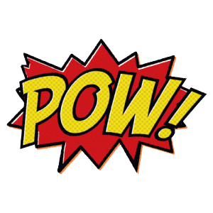

Serie
El excéntrico filántropo de la Ciudad Gótica, Bruno Díaz se coloca su traje de
superhéroe para luchar contra el crimen organizado como Batman, ayudado por su amigo Dick Ward como
Robin, que también usa su traje especial, en este clásico de los años 60
Adan West
William West Anderson, más conocido como Adam West, fue un actor estadounidense
reconocido por su interpretación de Batman en la serie homónima de los años 1960
Pelicula
Batman y Robin entran en acción cuando la Tierra se ve amenazada por las más malévolas
mentes criminales de ciudad Gótica: El Guasón, El Acertijo, Pingüino y Gatúbela.
Robin
Robin es el alias de varios superhéroes ficticios que aparecen en los cómics estadounidenses publicados
por DC Comics. El personaje fue creado originalmente por Bob Kane, Bill Finger y Jerry Robinson, para
servir como contraparte menor del superhéroe Batman
Adan West
William West Anderson, más conocido como Adam West, fue un actor estadounidense
reconocido por su interpretación de Batman en la serie homónima de los años 1960
Pelicula
Batman y Robin entran en acción cuando la Tierra se ve amenazada por las más malévolas
mentes criminales de ciudad Gótica: El Guasón, El Acertijo, Pingüino y Gatúbela.